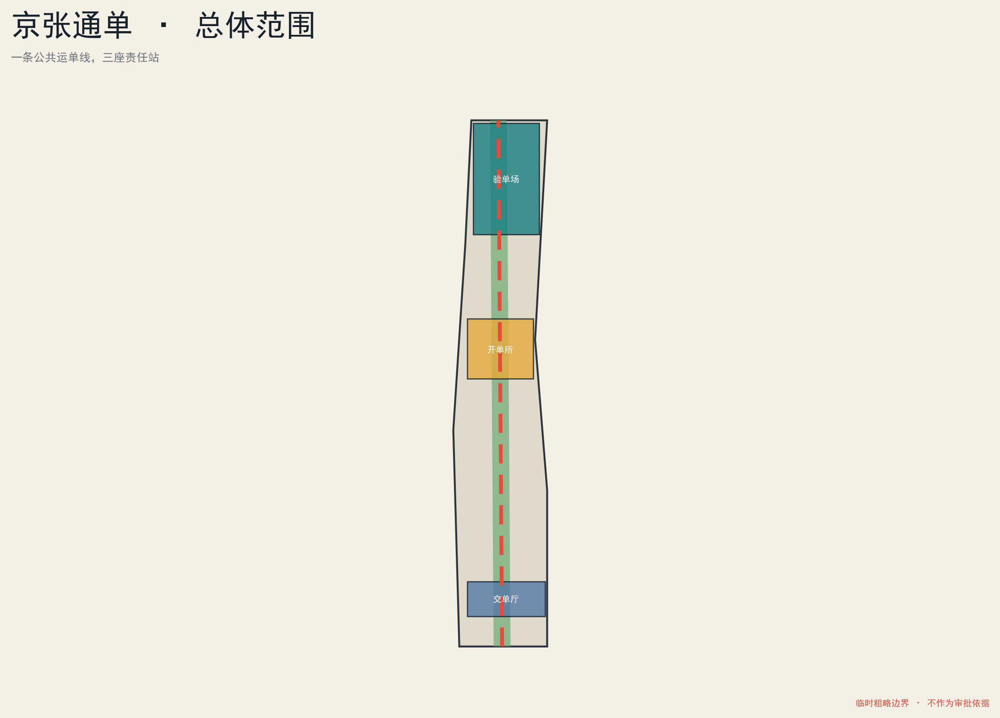
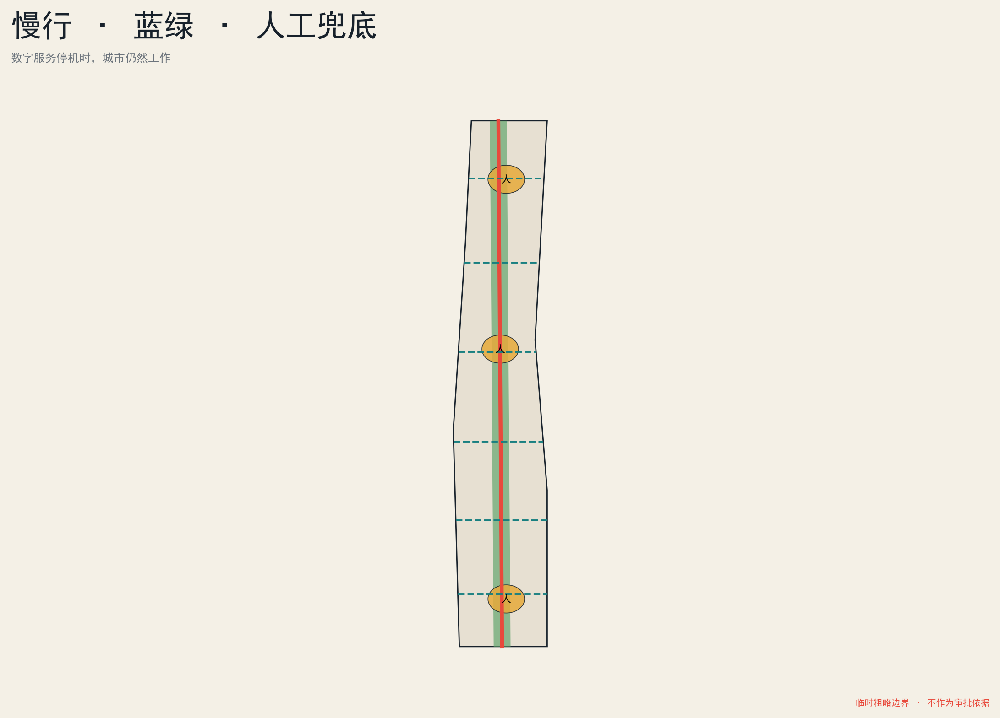
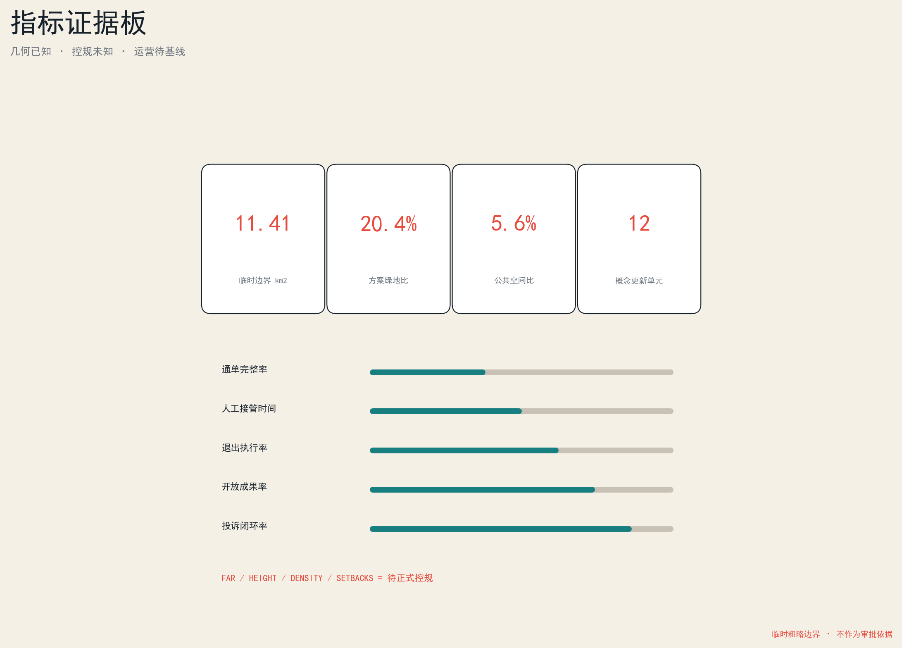

任务覆盖
总览地图
三层范围
重点区域
用地分区
交通慢行
蓝绿公共空间
建筑
更新项目
AI 场景
核心指标
任务覆盖
自检状态
假设
七栏公共责任
01
公共目的
公共目的
02
服务对象
服务对象
03
来源
来源
04
人工责任
人工责任
05
资源成本
资源成本
06
接管申诉
接管申诉
07
退出回馈
退出回馈

临时粗略边界，不作为审批依据。
三座责任站
众智园 · 验单场
AI原点 · 开单所
大钟寺 · 交单厅

核心指标
11.41 km2
20.4%
5.6%
